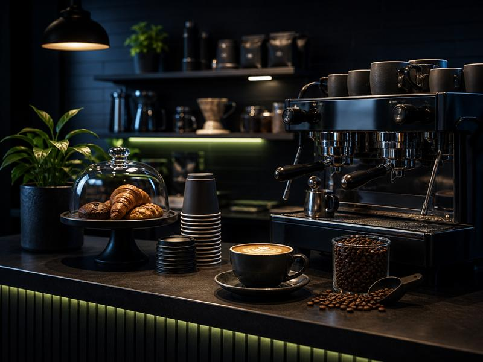

Яндекс заблокировал карточку кофейни по жалобе конкурента. Клиент потерял весь трафик с карт. Мы восстановили присутствие с нуля, заполнили меню, добавили новые отзывы и вернули кофейню в топ локальной выдачи.

К нам обратилась небольшая кофейня из Санкт-Петербурга с острой проблемой: Яндекс удалил их карточку на Яндекс Картах. Причина — предположительно жалоба от конкурента или автоматическая проверка модерации, которая не прошла.
До блокировки кофейня стабильно получала клиентов через карты: гости искали «кофейня рядом», «кофе с собой» и находили заведение. После удаления карточки этот канал полностью исчез. Телефон молчал, новые гости не приходили.
Удалённая карточка в Яндекс Картах — это не просто потеря одного канала. Это потеря всего локального трафика: карты, голосовой поиск Алисы, встроенный навигатор, блок «организации» в Яндекс Поиске.
Первым шагом стала подача заявки на восстановление карточки через официальные каналы Яндекс Бизнеса. Параллельно мы подготовили всю необходимую документацию для подтверждения существования организации.
После одобрения заявки приступили к полному заполнению карточки: выбрали правильную категорию «Кофейня», прописали подробное описание с ключевыми запросами, добавили актуальный режим работы и контактные данные.
Создание меню — один из ключевых факторов ранжирования кофеен в картах. Мы структурировали позиции по разделам: кофейные напитки, альтернативное молоко, десерты, еда. Каждая позиция с описанием и ценой.
Фотоконтент загружали в несколько разделов: интерьер, блюда и напитки, витрина, внешний вид. Правильное заполнение фотогалереи значительно увеличивает CTR карточки в результатах поиска.
Для восстановления рейтинга разместили новые отзывы от реальных посетителей кофейни. Отзывы содержали упоминание конкретных напитков, атмосферы и локации — что усиливало их нативность и вес.
Карточка восстановлена, верифицирована и полностью заполнена. Кофейня вернулась в локальную выдачу Яндекса по целевым запросам. Трафик с карт восстановлен — гости снова находят заведение через навигатор и поиск рядом.
Удаление карточки в Яндекс Картах — это серьёзная проблема, которую нельзя игнорировать. Самостоятельное восстановление часто затягивается на недели из-за ошибок при подаче заявки или неправильного заполнения данных.
Профессиональный подход к восстановлению и дальнейшей оптимизации карточки позволяет не просто вернуть статус-кво, но и улучшить позиции по сравнению с тем, что было до удаления.
Восстановим карточку, заполним и выведем в топ локальной выдачи.